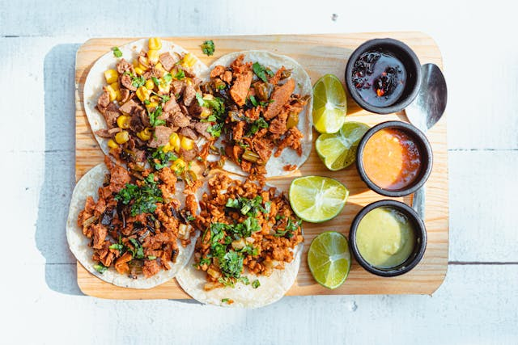

Tacos

Description
In the heart of Mexico City, where bustling streets meet the aroma of sizzling grills, tacos reign supreme. Cradled in
warm, handmade tortillas, each bite bursts with the vibrant flavors of seasoned meats, fresh cilantro, zesty lime, and
the fiery kick of salsa. A culinary symphony of textures and tastes, tacos embody the essence of street food perfection,
inviting all who dare to indulge in their savory embrace.
Ingredients
- Tortillas
- Protein(e.g., steak, chicken, pork, fish)
- Salsa
- Guacamole
- Onions
- Cilantro
- Cheese
- Lime
Steps
- Prepare the Protein: Season and cook your choice of protein (e.g., steak, chicken, pork, fish) until fully cooked and tender.
- Warm Tortillas: Heat tortillas in a dry skillet or oven until warm and pliable.
- Assemble Toppings: Prepare toppings such as salsa, guacamole, chopped onions, cilantro, and cheese.
- Assemble Tacos: Place a spoonful of cooked protein onto each warm tortilla. Top with desired toppings.
- Serve: Arrange tacos on a platter and serve immediately with lime wedges and additional toppings if desired.